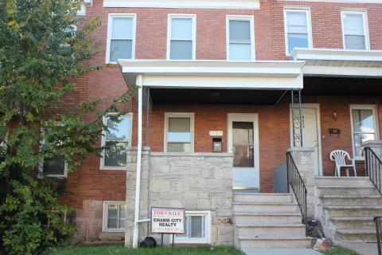

This week, we'll look at research that shows how the foreclosure crisis broke down along race and class lines, and we’ll hear what Northeast Baltimore’s Belair-Edison community is doing to stem the tide.
First, Sheilah talks with Anjanette Booker, a hair salon owner there who's trying to cope with being on the brink of foreclosure. The New York Times interviewed Ms. Booker for a 2008 series about foreclosures in Belair-Edison. Sheilah finds out how she's doing now.
Then Sheilah and Maryland Morning senior producer Lawrence Lanahan walk through the various ways the foreclosure crisis played out along lines of race and class. And Lawrence goes to Belair-Edison to find out what neighborhood association Belair-Edison Neighborhoods, Inc. is doing to fend off the wave of foreclosures. (Pictured above: BENI executive director Johnette Richardson and marketing director Mary Bushel.)
Our podcast also includes today's news report from WYPR's Mary Rose Madden about how foreclosures play out for Baltimore's renters--about half of Baltimore foreclosures affected rental properties. It also includes information about Baltimore children affected by foreclosure, and what the research says about whether minorities were targeted for subprime loans.
At right is 4231 Seidel Ave. in Belair-Edison; it was rehabbed by St. Ambrose Housing Aid Center and put on the market through the Healthy Neighborhoods initiative.
Foreclosures, Race, and Class
Sometimes foreclosures play out across race and class lines right in the front yard. The foreclosure wave turned banks into landlords when they took over millions of foreclosed homes, and a report from the National Fair Housing Alliance that says banks took better care of foreclosed homes in white and diverse neighborhoods than they did in heavily Latino and African-American neighborhoods. Part of their research took place right here in Maryland.
That report looked at the "spillover effect" of foreclosures: they bring down property values, which means wealth disappears in a big way from communities of color when the neglect is concentrated in those places. And of course there’s the loss of revenue to cities and counties.
That was the motivation for Baltimore City's suit against Wells Fargo. We followed that suit as it bounced back and forth between a federal judge and the city's law office and eventually went to settlement, speaking several times with Baltimore City Solicitor George Nilson. You can see the city's complaint, including stunning testimony from former Wells Fargo employees alleging the targeting of minority communities for subprime loans, here.
It’s pretty clear in the research that the subprime loans happened disproportionately among communities of color. This working paper from the Levy Economics Institute of Bard College looks at the following question: "Why were borrowers who previously had been excluded from equal access to mortgage credit instead super included in subprime lending?” They did a "mesoanalysis" of research on the topic and discovered that there are two sides in research land talking past each other.
Economists, they say, ignore race and portray this as a function of the market: irresponsible borrowers and unscrupulous lenders. They say other social scientists ignore the market and see it as a legacy of racial inequality. However, the social scientists, they say, rely mostly on correlations, coming up short on showing causation, of proving intent. (The Wells Fargo suit was a good test of intent—but the settlement makes it less clear cut than a lot of people might like. Of course you can look at the city’s complaint online and decide for yourself.)
University of California Davis sociology lecturer Jesus Hernandez co-authored the Bard report; he sent us this article, which he says "may lay out the issues of race and subprime lending for you in a much easier way for your listeners to follow."
ProPublica looked into the foreclosure crisis in Baltimore in a piece called "Foreclosures Don't Always Follow Script." They acknowledge the conventional narrative, much like that attributed to economists in the Bard paper: “rapacious lenders hooked up with irresponsible buyers in a tale of ‘Lending Gone Wild'.” But it turns out there were foreclosures for lots of other reasons, especially here in Baltimore.
Jennifer LaFleur, head of computer-assisted reporting for ProPublica, said, "A lot of people had loans that were for purchasing a house, whereas other places had a lot more refinances. Baltimore tended to have more fixed rate loans, but higher interest rates over all. A lot of first time homebuyers that may not have been educated to what their options were. And I think a lot of people went into purchases where they thought could handle it, then one little thing happens, someone gets sick, somebody lost their job. For me personally, it was just kind of an opportunity loss, a lot of people who thought they could finally have their dream...finally have their house, it just went wrong for a lot of people."
Make sure to check out this interactive data widget from ProPublica and the Seattle Times--it's an interesting window onto Baltimore's foreclosure landscape.
We also looked at the effect of foreclosure on children: you can read more about that in our overview of a recent report from Matthew Kachura, program manager for the Baltimore Neighborhood Indicators Alliance at the University of Baltimore's Jacob France Institute.
Maryland Morning has covered foreclosures closely over the past four years. Our segment "What to Do After a Foreclosure" generated a comment thread full of stories from frustrated borrowers trying in vain to get loan modifications.